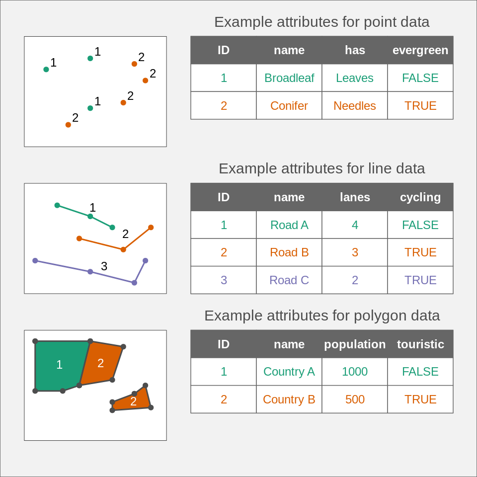
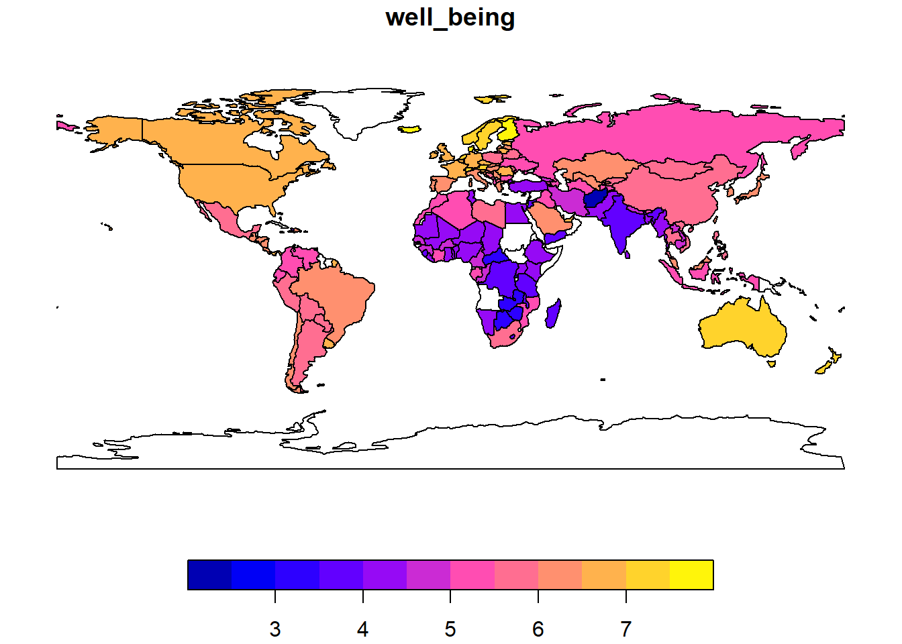

library(tmap)
library(sf)Linking to GEOS 3.13.1, GDAL 3.10.2, PROJ 9.5.1; sf_use_s2() is TRUEThe main vector types are points, lines and polygons (or a combination thereof) and the point is the base of all these types. For example a simple line consists of 2 connected points, similarly an ordered sequence of connected points will represent a more complex line (often called a polyline). A simple polygon will be modeled as an external ring, which is a special type of polyline where the first and last points are identical. In the case of lines and polygons we often speak of vertices to describe these points. Things can be a bit more complex, for example a polygon could have a hole which is modeled as an internal ring.
The Simple Feature standard (full documentation) was developed to be sure that we all speak the same language when describing vector elements. The specification describes 18 geometry types, but don’t worry only 7 of them will be useful for us. The following figure shows these 7 types (source: Lovelace et al., 20191):

A feature represents a geographic entity modeled by one of these types. For example a building would be a single feature of type POLYGON, while the whole Hawaii archipelago would be a single feature of type MULTIPOLYGON (but you could of course also model each island separately as type POLYGON). A single feature using the MULTI* types can have multiple elements but this is not mandatory. Most of the time we will use the default 2D version of these types. However it is possible to include additional numeric values such as the height of each point (Z values) or some kind of measurement error (M values). Note that many GIS software will ignore Z and M values for the vast majority of spatial analyses.
The feature type is usually defined for the whole vector data set, and not per feature (actually sf lets you do that but this will brings you all sorts of troubles). For example, if you know that your data set will contain POLYGON and MULTIPOLYGON features, then you will have to use the MULTIPOLYGON type for all of them.
In most GIS softwares (including R), simple features are internally encoded using the well-known binary (WKB) or well-known text (WKT) standards. As the name mentions, WKB is a binary format and hence not easily readable by normal humans. The WKT format is encoding exactly the same information as WKB, but in a more human friendly way. Here are some examples of WKT-encoded features (check the Wikipedia page if you need more):
POINT (10 5)LINESTRING (1 1, 2 4, 5 10)POLYGON ((10 5, 10 9, 5 8, 4 2, 10 5))MULTILINESTRING ((1 1, 2 4, 5 10), (2 2, 5 2))The geometry is of course essential in order to have a spatial information but the vector data model also allows storing non-spatial attributes (often called attribute table) for each feature. As we will see, these tables are stored as data frames in R and each column will store some property of the related feature (identification number, name, etc.). Each row relates to a single spatial feature (which can consist of several geometries if its type is MULTI*). The following figure shows some examples (source: Tennekes & Nowosad, 20212):

Let’s have a look at how R stores a vector data set. The main classes and methods needed to work with spatial vector data are defined in the sf package. We will also load the tmap package to have access to some spatial data sets.
library(tmap)
library(sf)Linking to GEOS 3.13.1, GDAL 3.10.2, PROJ 9.5.1; sf_use_s2() is TRUEWhen you first load the sf package, it will provide you with version information about some important open-source GIS libraries it uses. In a few rare cases, some functions will only be available if you use recent version of these libraries. If you use sf on Windows or Mac and install it from CRAN, they will be included inside the sf package and there’s no easy way to update them. These libraries are used in almost all open-source GIS software and even in some commercial ones. GDAL takes care of reading and writing your GIS files and can read 99.9% of all the existing GIS formats (the vector part of the GDAL library is often called OGR); GEOS is a Euclidean planar geometry engine and is used for all the common GIS analyses (intersection, union, buffer, etc.); PROJ is responsible for all the coordinate reference systems operations. The s2 library is a spherical geometry engine which is active by default for computations when using unprojected data.
The availability of the sf package was a massive change in the “R/GIS” ecosystem (often called R-Spatial). In the old days we used a combination of several packages to process GIS vector data in R. The spatial classes (and some functions) were defined in the sp package, the import/export of data was managed by the rgdal package, and the geometric operations were available in the rgeos package. You’ll find a lot of code using these packages on the internet. Please refrain from using them since they are not maintained anymore. The packages rgdal and rgeos were removed from CRAN, sp is still available. Moreover the sf package is definitely more powerful and much faster.
We will now inspect the World vector data set inside the tmap package and have a look at its structure.
class(World)[1] "sf" "data.frame"names(World) [1] "iso_a3" "name" "sovereignt" "continent" "area"
[6] "pop_est" "pop_est_dens" "economy" "income_grp" "gdp_cap_est"
[11] "life_exp" "well_being" "footprint" "HPI" "inequality"
[16] "gender" "press" "geometry" WorldSimple feature collection with 177 features and 17 fields
Attribute-geometry relationships: constant (12), aggregate (3), identity (2)
Geometry type: MULTIPOLYGON
Dimension: XY
Bounding box: xmin: -180 ymin: -90 xmax: 180 ymax: 83.645
Geodetic CRS: WGS 84
First 10 features:
iso_a3 name sovereignt continent area pop_est
1 AFG Afghanistan Afghanistan Asia 642393.20 [km^2] 38041754
2 ALB Albania Albania Europe 28298.42 [km^2] 2854191
3 DZA Algeria Algeria Africa 2312302.79 [km^2] 43053054
4 AGO Angola Angola Africa 1249442.03 [km^2] 31825295
5 ATA Antarctica Antarctica Antarctica 12258324.81 [km^2] 4490
6 ARG Argentina Argentina South America 2783123.36 [km^2] 44938712
7 ARM Armenia Armenia Asia 29555.06 [km^2] 2957731
8 AUS Australia Australia Oceania 7705931.67 [km^2] 25364307
9 AUT Austria Austria Europe 83755.95 [km^2] 8877067
10 AZE Azerbaijan Azerbaijan Asia 86152.91 [km^2] 10023318
pop_est_dens economy income_grp gdp_cap_est
1 5.921880e+01 7. Least developed region 5. Low income 507.1007
2 1.008604e+02 6. Developing region 4. Lower middle income 5353.1806
3 1.861912e+01 6. Developing region 3. Upper middle income 3973.9573
4 2.547161e+01 7. Least developed region 3. Upper middle income 2790.7047
5 3.662817e-04 6. Developing region 2. High income: nonOECD 200000.0000
6 1.614686e+01 5. Emerging region: G20 3. Upper middle income 9912.2779
7 1.000753e+02 6. Developing region 4. Lower middle income 4622.4623
8 3.291530e+00 2. Developed region: nonG7 1. High income: OECD 55060.3255
9 1.059873e+02 2. Developed region: nonG7 1. High income: OECD 50137.6187
10 1.163433e+02 6. Developing region 3. Upper middle income 4793.5225
life_exp well_being footprint HPI inequality gender press
1 61.982 2.436034 1.139635 16.21067 NA 0.665 19.09
2 76.463 5.255482 3.674262 46.33355 29.4 0.116 54.10
3 76.377 5.217018 3.110979 47.44608 27.6 0.460 41.98
4 NA NA NA NA 51.3 0.520 52.44
5 NA NA NA NA NA NA NA
6 75.390 5.908279 6.391003 43.79233 40.7 0.292 63.13
7 72.043 5.300569 3.429790 43.00195 27.9 0.198 71.60
8 84.526 7.111599 17.703905 39.47980 34.3 0.063 73.42
9 81.580 7.079641 12.147266 45.34394 30.7 0.048 74.69
10 69.366 5.200000 6.102844 34.37222 26.6 0.329 27.99
geometry
1 MULTIPOLYGON (((66.217 37.3...
2 MULTIPOLYGON (((20.605 41.0...
3 MULTIPOLYGON (((-4.923 24.9...
4 MULTIPOLYGON (((12.322 -6.1...
5 MULTIPOLYGON (((-61.883 -80...
6 MULTIPOLYGON (((-68.634 -52...
7 MULTIPOLYGON (((46.483 39.4...
8 MULTIPOLYGON (((147.689 -40...
9 MULTIPOLYGON (((16.88 48.47...
10 MULTIPOLYGON (((46.144 38.7...We see the World object is stored as a data frame with an additional geometry column (note that the name of the geometry column doesn’t need to be ‘geometry’). The content of the geometry column is displayed using the WKT format. A programmer would say these objects are instances of the sf class, and I will thus call them sf objects. R is also giving us more information, like the coordinate reference system used (more on that later) and the number of dimensions (i.e. XY, XYZ or XYZM).
It is also easy to plot the data using the usual command.
plot(World)
By default R will take the first 9 attributes of the sf object and plot them using the available geometries. Since these objects inherit from the data base class, you can use all the typical data frame functions such as summary, head, merge, rbind, etc. Subsetting is also possible using the standard [] operators. Therefore you can use the following code if you only want to plot the well-being index, for the whole world, only for countries with a high index, or just for Australia.
plot(World[,"well_being"])plot(World[World$well_being > 6,"well_being"])
plot(World[World$name == "Australia","well_being"])
Note that the color scale was adapted depending on the available values in the filtered data set. If you only need the geometries without any attributes, then you can use the st_geometry() function.
plot(st_geometry(World))
We haven’t done it here, but, as we will see later, it is better to first project everything using an appropriate projection when you want to plot global data (like the previous world maps).
sf objectsMost of the time you won’t need to create your own sf objects from scratch since you’ll import some existing GIS data. But if you need to, there are special functions to help you. This is also a good way to get a better understanding of the structure of sf objects. The standard process is shown in the following figure (source: Lovelace et al., 20191):

You first need to create each feature geometry using some constructor functions. Each of these features will be of class sfg (simple feature geometry). Then you collect all these geometries in a list using the st_sfc() function. You get a new object of class sfc (simple feature list-column). After that you combine the newly created simple feature list-column with the attributes (stored as a data frame, or a tibble) using the st_sf() function in order to get an sf object.
Since this is rather abstract, let’s look at a simple example. Imagine we want to create a point data set containing three bird observations, and each observation will have the following attributes: species and sex. We start by creating our point geometries using x and y coordinates:
pt1 <- st_point(c(2657000, 1219000))
pt2 <- st_point(c(2658000, 1218000))
pt3 <- st_point(c(2659000, 1217000))Let’s have a look at what we’ve just created:
pt1POINT (2657000 1219000)class(pt1)[1] "XY" "POINT" "sfg" typeof(pt1)[1] "double"str(pt1) 'XY' num [1:2] 2657000 1219000Our first object is a 2D point (otherwise we would see XYZ or XYZM) of class sfg. If we look a bit more into the details of the structure, we see that it is actually stored as vector of type double (with length 2).
Now we need to collect our points inside an sfc object. This is simply a list of sfg objects with an associated coordinate reference system (CRS). Since we collected our data in Switzerland, we will use the standard Swiss coordinate reference system. As we will see later, most coordinate reference systems are identified by a specific number.
pts <- st_sfc(pt1, pt2, pt3, crs = "EPSG:2056")Let’s have a look at our new creation:
ptsGeometry set for 3 features
Geometry type: POINT
Dimension: XY
Bounding box: xmin: 2657000 ymin: 1217000 xmax: 2659000 ymax: 1219000
Projected CRS: CH1903+ / LV95POINT (2657000 1219000)POINT (2658000 1218000)POINT (2659000 1217000)class(pts)[1] "sfc_POINT" "sfc" typeof(pts)[1] "list"str(pts)sfc_POINT of length 3; first list element: 'XY' num [1:2] 2657000 1219000This confirms that our sfc object is actually a list, and this object will be the geometry column of the soon to be created sf object. Since our object is a list, it is easy to extract individual elements if needed:
# Extract the second item of the list
pts[[2]]POINT (2658000 1218000)class(pts[[2]])[1] "XY" "POINT" "sfg" The feature geometries (stored in an sfc object) are only half of what we need to create an sf object. We also need to define the attributes of each feature. We store them in a data frame using the same order as the geometries.
pts_data <- data.frame(species = c("wallcreeper", "alpine chough", "kingfisher"),
sex = c("male", "female", "female"))
pts_data species sex
1 wallcreeper male
2 alpine chough female
3 kingfisher femaleAnd as a last step we combine the feature geometries with the related attributes using the st_sf() function. We now have a typical GIS data set stored as an sf object.
pts_sf <- st_sf(pts_data, geometry = pts)
pts_sfSimple feature collection with 3 features and 2 fields
Geometry type: POINT
Dimension: XY
Bounding box: xmin: 2657000 ymin: 1217000 xmax: 2659000 ymax: 1219000
Projected CRS: CH1903+ / LV95
species sex geometry
1 wallcreeper male POINT (2657000 1219000)
2 alpine chough female POINT (2658000 1218000)
3 kingfisher female POINT (2659000 1217000)Since everything is stored as lists, it is again easy to access individual elements of the sf object:
# Extract the 3rd geometry
pts_sf$geometry[[3]]POINT (2659000 1217000)There’s some sort of tradition to call geometry columns geom or geometry, but you’re entirely free to chose another name. However, you need to be a bit careful since the sf package must always know the correct name. For example, using the standard names() function will not work for geometry columns since sf won’t be informed of the change. To modify the name of the geometry column, always use the st_geometry() function.
names(pts_sf)[3] <- "my_beautiful_points"
pts_sfError in st_geometry.sf(x): attr(obj, "sf_column") does not point to a geometry column.
Did you rename it, without setting st_geometry(obj) <- "newname"?st_geometry(pts_sf) <- "my_beautiful_points"
pts_sfSimple feature collection with 3 features and 2 fields
Geometry type: POINT
Dimension: XY
Bounding box: xmin: 2657000 ymin: 1217000 xmax: 2659000 ymax: 1219000
Projected CRS: CH1903+ / LV95
species sex my_beautiful_points
1 wallcreeper male POINT (2657000 1219000)
2 alpine chough female POINT (2658000 1218000)
3 kingfisher female POINT (2659000 1217000)You can also create sf objects directly from a data frame containing a column of type sfc using the st_as_sf() function.
pts_data$geometry <- pts
pts_sf <- st_as_sf(pts_data)You’ve now probably noticed that most functions in the sf package have an st_ prefix. This is a reference (and probably homage) to PostGIS, an extension allowing to store and query GIS data in the PostgreSQL database management system. All PostGIS functions start with the ST_ prefix, which stands for “Spatial Type”.
We process similarly to create other geometry types from scratch, the only difference is that we now need matrices to store the vertices of the lines and polygons instead of a simple vector, and for multilinestrings, (multi-)polygons and geometry collections, we need more lists to encapsulate everything. If you’re not sure how to create geometries, the sf documentation provides examples for all the geometry types. Look for the following functions: st_point(), st_linestring(), st_polygon(), st_multipoint(), st_multilinestring(), st_multipolygon(), st_geometrycollection(). Here’s a more complex example showing how to create a multipolygon (including one geometry with a hole) inside an sfg object. The next steps (collecting geometries in an sfc object, adding attributes and store as an sf object) are exactly the same as before.
# rbind creates matrices and makes the coding easier
pol1_border <- rbind(c(1, 5), c(2, 2), c(4, 1), c(4, 4), c(1, 5))
pol1_hole <- rbind(c(2, 4), c(3, 4), c(3, 3), c(2, 3), c(2, 4))
pol1 <- list(pol1_border, pol1_hole)
pol2 <- list(rbind(c(0, 2), c(1, 2), c(1, 3), c(0, 3), c(0, 2)))
multipolygon_list <- list(pol1, pol2)
multipol <- st_multipolygon(multipolygon_list)
multipolMULTIPOLYGON (((1 5, 2 2, 4 1, 4 4, 1 5), (2 4, 3 4, 3 3, 2 3, 2 4)), ((0 2, 1 2, 1 3, 0 3, 0 2)))plot(multipol, col = "navy")
You can also create sfc and sf objects from scratch using the WKT format and the st_as_sfc() and st_as_sf() functions. The following example creates an sfc object using a character vector, without needing to create an sfg object first.
pts <- st_as_sfc(c("POINT(2657000 1219000)", "POINT(2658000 1218000)", "POINT(2659000 1217000)"), crs = "EPSG:2056")And you can use a similar approach to create an sf object. In this case we add a new column (as a character vector) to the data frame containing the attributes. Note the use of the wkt argument inside the st_as_sf() function.
pts_data$geometry <- c("POINT(2657000 1219000)", "POINT(2658000 1218000)", "POINT(2659000 1217000)")
pts_sf <- st_as_sf(pts_data, wkt = "geometry", crs = "EPSG:2056")